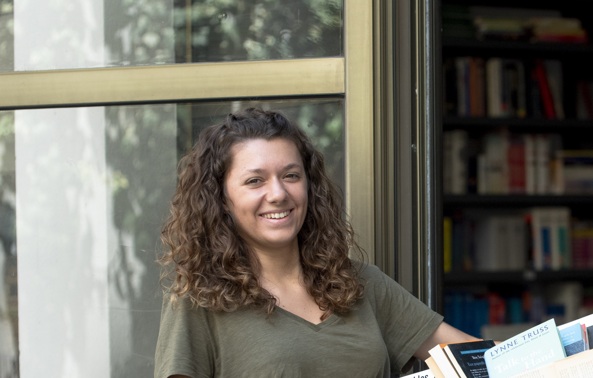

Melina Lespagney
Hello, I am Melina! Yes, yes, this is me in the picture. I am a third-year Global BBA ESSEC student from Greece and France living in Paris.
Discover Le WagonMy Studies

Today, I am a third-year Global BBA ESSEC student in Paris. But how did I get there? Well, having 2 nationalities meant that I had to live in one of the 2 countries: Greece or France. And my parents decided to go for Greece. So the compromise was that I studied in the French-Greek High School of Athens with a baccalaureate ES (economics). After finishing high school, I decided to opt for an economic preparatory school and university of Sorbonne but my dream was always ESSEC. With some hard work and motivation,I passed the concours Sésame and got accepted into the ESSEC Global BBA program!
Kiteboarding

Kitesurfing is my favourite sport! It is a combination of dealing with the wind and the water and oneself. I often get a wow thought in my head when kiting, especially if I am in a spot with just the beautiful water and nature. It’s something to do with the ‘I love being me’ feeling.
Photography

Photography is one of my hobbies. I practice photography as it really enabled us to document our lives and put them into place for a long history. I believe it started as I always loved looking at old pictures of my parents and grand-parents. It is simply fun to do as you learn how a camera works, you explore photo editing, you travel to new places, you hike or wake up early or stay up late to see the sunrise and the sunset.
Pottery
Recently, well to be precise, this summer, I started to learn pottery. It is a way to express yourself by creating something. Being a very stressed person, pottery relaxes me. A lot of focus is required while you’re making pottery, therefore outside distractions are reduced and no longer stress you out.